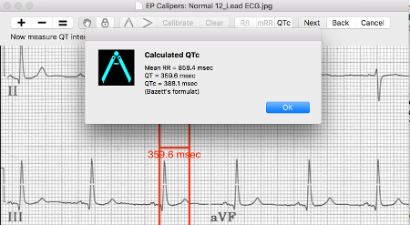

Making measurements
Making measurements
Caliper interval
The interval measured by each caliper is displayed on top of or next to the crossbar of the caliper. Until the calipers are calibrated, measurements are displayed in arbitrary units (points, roughly equivalent to screen pixels).
Measurement prompts
If the Show Prompts preference is selected (see Preferences) (it is by default) the program will guide you with detailed instructions on how to make each measurement. When you become familiar with how to make measurements you may consider turning off the Show Prompts preference. This minimizes the prompting the program gives. Prompts appear at the top of the window, right under the toolbars. For example, when measuring the mean RR interval, if Show Prompts is enabled, the program will first prompt you to select a time caliper, stretch it over a number of intervals, and then click Next on the Navigation Toolbar. A dialog will then appear asking how many intervals you are measuring. After entering the number and clicking the calculate button, the result will appear. If Show Prompts is disabled, you can select a caliper and stretch it over a number of intervals without prompting, and then press the mean RR (mRR) button or the Caliper | Mean Rate/Interval menu item. The rest of the process is the same.
Calibration
Calibration is necessary before any measurements can be made! If the Show Prompts preference is enabled, select the Calibrate button or the Caliper | Calibrate menu item. Follow the prompts to select a caliper and stretch it over a known interval (such as 1000 msec for time, or 10 mm for amplitude calipers). Select the Next button. In the dialog box that appears, make sure the interval matches what you are measuring. Enter both the calibration interval and units (e.g. 1000 msec, or 1 mV). Select the Calibrate button in the dialog box to set the calibration. Note that time and amplitude calipers need to be calibrated separately. Once calibrated, calipers will show intervals in the units used to calibrate. Newly created calipers will use the same calibration.
If you are not using prompts, then simply select and stretch a caliper over the interval you will be using for calibration, select Calibrate on the toolbar, and enter the calibration interval.
It is important to use time units such as msec or sec when providing a time calibration if you want to do calculated measurements such as the corrected QT interval. In other words, type in your calibration measurement as 1000 msec and not just 1000. Negative calibration intervals are treated as positive numbers (i.e. the negative sign is ignored).
Changing calibration
You can recalibrate at any time just by repeating the calibration process.. You can clear all calibration by selecting Clear in the calibration toolbar. Note that calibration is maintained if the image is zoomed. Selecting a new image will reset calibration. If you need to rotate the image, you must first clear calibration.
Interval/Rate
Once a time caliper is calibrated, provided you use time units (such as msec or sec) for the calibration, it is possible to toggle between interval measurements (e.g. 600 msec) and heart rate measurements (e.g. 100 bpm) by selecting the R/I button or Caliper | Toggle Rate/Interval menu command.
Mean rate and interval calculation
Select a calibrated caliper and stretch it over a number of intervals. Select the mRR button or Caliper | Mean Rate/Interval menu command and enter the number of intervals measured in the dialog box that appears. Select the Calculate button to see the result. If the Show Prompts preference is selected, prompts will appear to guide you through the process. Using EP Calipers to calculate mean rates and intervals is very useful in irregular rhythms, such as atrial fibrillation.
QTc calculation
QTc measurement is a multiple step process, and prompts are always shown. Select the QTc button on the toolbar or the Caliper | QTc Measurement menu command. Follow the prompt to stretch the selected caliper over one or more RR intervals and select the Next button. Enter the number of intervals the caliper is stretched over and select Continue. Then use the same caliper to measure the QT interval. Select Next. A dialog box will give the calculated QTc using Bazett's formula.

Figure 1: QTc measurement